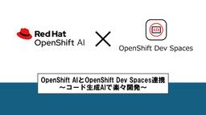
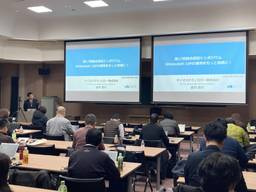
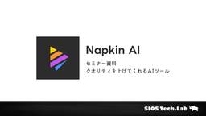

SIOS Tech. Lab
https://tech-lab.sios.jp
サイオステクノロジーのエンジニアが クラウド、OSS、認証に関する様々な情報を提供します。
フィード

OpenShift AIとOpenShift Dev Spaces連携 ～コード生成AIで楽々開発～
SIOS Tech. Lab
はじめに こんにちはサイオステクノロジーの小野です。今回はOpenShift AIにデプロイしたLLMをVSCodeと連携させて、コード生成AIを利用する方法について解説します。また、VSCodeはOpenShift上で ...OpenShift AIとOpenShift Dev Spaces連携 ～コード生成AIで楽々開発～ first appeared on SIOS Tech. Lab.
1日前
OSSサポートエンジニアの現場から！特定の条件のログを/var/logs/messagesにも出力したい
SIOS Tech. Lab
こんにちは、OSSよろず相談室のSKです。 日々、多くのOSSに関するお問い合わせをいただく中で、今回は rsyslog に関するご相談がありました。 「特定のログファイルから ERROR を含むログだけを抜き出して、シ ...OSSサポートエンジニアの現場から！特定の条件のログを/var/logs/messagesにも出力したい first appeared on SIOS Tech. Lab.
2日前

第17回 統合認証シンポジウムで登壇しました
SIOS Tech. Lab
佐賀大学では2000年より認証統情報の統合を進められており、その成果を踏まえて2007年度から毎年統合認証に関するシンポジウムが開催されています。 2025年3月10日には「第17回 統合認証シンポジウム」 ...第17回 統合認証シンポジウムで登壇しました first appeared on SIOS Tech. Lab.
2日前
Figmaプレゼン資料を爆速で作る！時系列デザインサンプル｜カラーコード付き
SIOS Tech. Lab
始めに ども！最近は登壇資料を全力で作成しており、いろんなことが後回しになっている龍ちゃんです。3月に入ってしっかりブログ更新の手が止まってしまっていました。なので、直近の業務でブログ化できそうなところを書いていきます。 ...Figmaプレゼン資料を爆速で作る！時系列デザインサンプル｜カラーコード付き first appeared on SIOS Tech. Lab.
3日前
コンテナプラットフォームで活用出来るストレージサービス（ODF / Longhorn / MinIO ）とは？
SIOS Tech. Lab
はじめに Kubernetes環境でのストレージ管理は、アプリケーションの可用性やスケーラビリティに大きく関わります。 本記事では、Kubernetes向けの代表的なストレージソリューションである ODF（Red Hat ...コンテナプラットフォームで活用出来るストレージサービス（ODF / Longhorn / MinIO ）とは？ first appeared on SIOS Tech. Lab.
3日前

プレゼン資料が見違える！AI図解ツールNapkin AIの基本と実践的な使い方完全版
SIOS Tech. Lab
挨拶 最近は新しい登壇資料を準備して、頑張って執筆している龍ちゃんです。YouTubeやXなどで情報収集しながら、新しいAIツールを見つけたので使用レポートと具体的な使用方法、注意点などをまとめて書いていこうと思います。 ...プレゼン資料が見違える！AI図解ツールNapkin AIの基本と実践的な使い方完全版 first appeared on SIOS Tech. Lab.
4日前
Difyで外部の検索データベースを使う
SIOS Tech. Lab
Difyは。自身のプラットフォーム内に検索用データベースを持っています。デフォルトでは、Weaviateを使いますが、PostgreSQLやChromaなど多彩なデータベースに対応しています。そして、自プラットフォーム内 ...Difyで外部の検索データベースを使う first appeared on SIOS Tech. Lab.
5日前
Claude Code使ってみた
SIOS Tech. Lab
はじめに こんにちは！年度末で複数プロジェクトにてんやわんやのなーがです。皆さん生成AI使っていますか？DeepSeekやDifyなど最近は特に新しいAIサービスの大豊作となっています。前回はDifyの内容についてでした ...Claude Code使ってみた first appeared on SIOS Tech. Lab.
5日前

Ansible 検証「ansible.posix.selinux」モジュールで RHEL 9 の SELinux を無効化してはいけない ※2025/03 現在
SIOS Tech. Lab
こんにちは。サイオステクノロジーの橋本です。 今回、調べてもイマイチわからなかったので実際に動作検証してみました。 今回のテーマは Ansible のモジュール「ansible.posix.selinux」を用いて RH ...Ansible 検証「ansible.posix.selinux」モジュールで RHEL 9 の SELinux を無効化してはいけない ※2025/03 現在 first appeared on SIOS Tech. Lab.
8日前
SUSE Virtualization とは？
SIOS Tech. Lab
概要 前回は、既存のコンテナプラットフォーム上でコンテナとVMを統合管理することが出来るOCP-Virtについてご紹介しました。今回も同じようにプラットフォーム上でコンテナとVMを統合管理することが出来るSUSE Vir ...SUSE Virtualization とは？ first appeared on SIOS Tech. Lab.
9日前